| Модель товара | Тип товара | Краткое описание | Рейтинг | Цена |
|---|---|---|---|---|
| 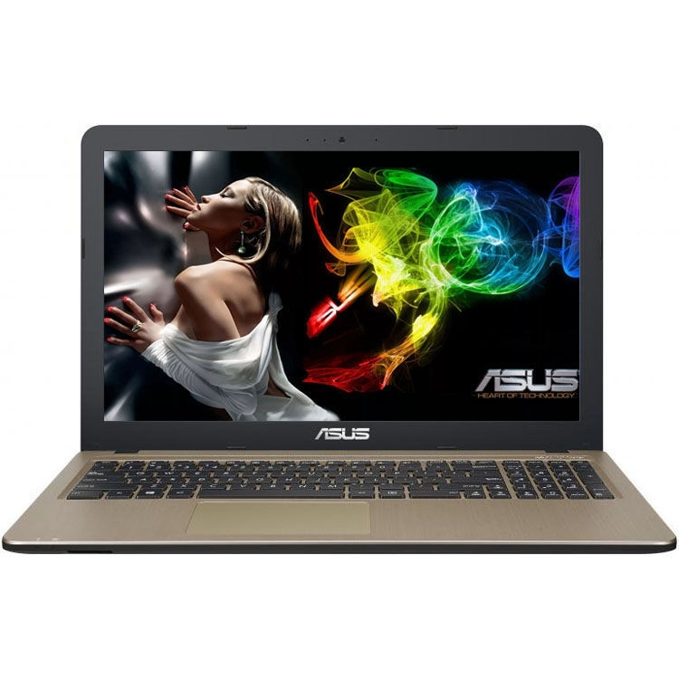Ноутбук Asus VivoBook D540YA-DM790D | Ноутбук | Тип корпуса:ноутбук Размер экрана:15.6" Разрешение экрана:1920x1080 Поверхность экрана:матовая Процессор:AMD E2 Модель процессора:6110 Количество ядер процессора:4 ядра Частота процессора:1500 МГц Объём установленной оперативной памяти:4 Гб Тип жесткого диска:HDD Объем диска:1.0 Тб Скорость вращения жесткого диска:5400 Об/мин Тип видеокарты:встроенная Видеокарта:Radeon R2 | ☆☆☆ | 549,99 руб. |
| 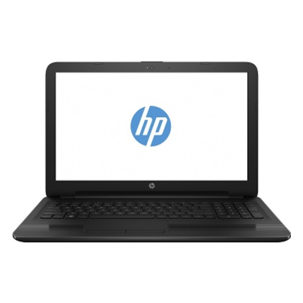Ноутбук AHP 15-rb028ur | Ноутбук | Тип корпуса:ноутбук Размер экрана:15.6" Разрешение экрана:1366x768 Тип матрицы:SVA Поверхность экрана:матовая Процессор:AMD A4 Модель процессора:9120 Количество ядер процессора:2 ядра Частота процессора:2200 МГц Объём установленной оперативной памяти:4 Гб Тип жесткого диска:HDD Объем диска:500 Гб Скорость вращения жесткого диска:5400 Об/мин Тип видеокарты:встроенная Видеокарта:Radeon R3 | ☆☆☆☆☆ | 679,99 руб. |
| 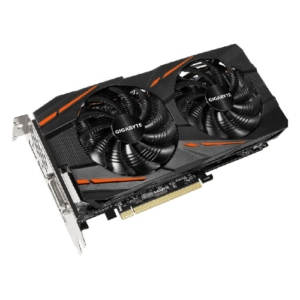Видеокарта GIGABYTE Radeon RX 570 1244Mhz | Видеокарта | Производитель видеопроцессора:AMD Назначение:Для майнинга Линейка:Radeon Графический процессор:AMD Radeon RX 570 Частота графического процессора (базовая):1244 МГц Частота графического процессора (максимальная):1255 МГц Поддержка OC (Overclocked):да Поддержка VR (Virtual Reality):да Тип видеопамяти:GDDR5 Объем видеопамяти:8 Гб Шина памяти:256 бит Частота видеопамяти:7000 МГц Интерфейс подключения:PCI-E 16x 3.0 Максимальное разрешение:7680x4320 Пикс. Кол-во поддерживаемых мониторов:5 шт Поддержка режима SLI/CrossFire:есть Разъемы:DVI, HDMI, поддержка HDCP, DisplayPort x3 | ☆☆☆☆ | 379,99 руб. |
| 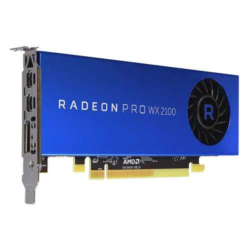Видеокарта AMD Radeon Pro WX 2100 2GB | Видеокарта | Производитель видеопроцессора:AMD Назначение:Профессиональная Линейка:Radeon Pro Графический процессор:AMD Radeon Pro WX 2100 Частота графического процессора (базовая):н/д МГц Тип видеопамяти:GDDR5 Объем видеопамяти:2 Гб Шина памяти:64 бит Частота видеопамяти:6000 МГц Интерфейс подключения:PCI-E 16x 3.0 Максимальное разрешение:5120x2880 Пикс. Кол-во поддерживаемых мониторов:3 шт Поддержка режима SLI/CrossFire:нет | ☆☆ | 349,99 руб. |
| 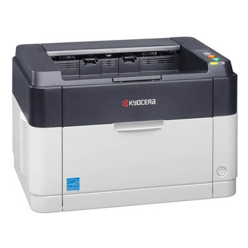Лазерный принтер Kyocera FS-1040 | Принтер | Тип печати:черно-белая Максимальный формат:A4 Макc. разрешение ч/б печати:1800x600 dpi Скорость печати (ч/б):20 стр/мин Время выхода первого отпечатка:8.5 сек. Лоток подачи бумаги:250 лист. Лоток вывода бумаги:150 лист. Двусторонняя печать:нет Объем памяти:32 Мб Частота процессора:390 МГц Потребляемая мощность (при работе):304 Вт Потребляемая мощность (в режиме ожидания):5 Вт Уровень шума при работе:50 дБ Количество картриджей:1 шт Коды картриджей:TK-1110 Интерфейсы:USB | ☆☆☆☆ | 296,99 руб. |
| 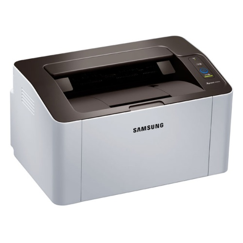Лазерный принтер Samsung SL-M2020 | Принтер | Тип печати:черно-белая Максимальный формат:A4 Макc. разрешение ч/б печати:1200x1200 dpi Скорость печати (ч/б):20 стр/мин Время выхода первого отпечатка:8.5 сек. Лоток подачи бумаги:150 лист. Лоток вывода бумаги:100 лист. Двусторонняя печать:нет Объем памяти:64 Мб Частота процессора:400 МГц Потребляемая мощность (при работе):310 Вт Потребляемая мощность (в режиме ожидания):30 Вт Уровень шума при работе:50 дБ Количество картриджей:1 шт Коды картриджей:MLT-D111S Интерфейсы:USB | ☆☆☆☆☆ | 164,99 руб. |
| 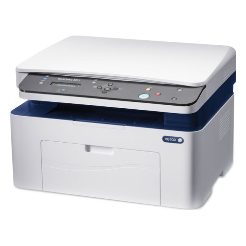Лазерное МФУ Xerox WorkCentre 3025BI | МФУ | Функции:принтер/сканер/копир Тип печати:черно-белая Макс. формат печати:A4 Двусторонняя печать:нет Количество картриджей:1 шт Макc. разрешение ч/б печати:1200x1200 dpi Скорость печати:20 стр/мин Время выхода первого отпечатка:8.5 сек. Тип сканера:планшетный Макс. формат оригинала сканирования:A4 Макс. размер сканирования:216x297 мм Разрешение сканера:600x600 dpi Максимальное разрешение копира:600x600 dpi Скорость копирования:20 стр/мин Время выхода первой копии:10 сек. Объем памяти:128 Мб Частота процессора:600 МГц Лоток подачи:151 лист. Лоток вывода:100 лист | ☆☆☆ | 302,99 руб. |
| 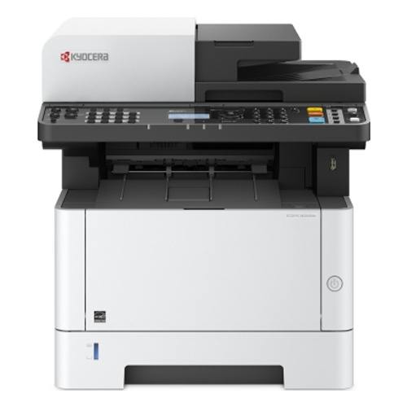Лазерное МФУ Kyocera M2040DN | МФУ | Функции:принтер/сканер/копир Тип печати:черно-белая Макс. формат печати:A4 Двусторонняя печать:есть Количество картриджей:1 шт Макc. разрешение ч/б печати:1200x1200 dpi Скорость печати:40 стр/мин Время выхода первого отпечатка:6.4 сек. Тип сканера:планшетный/протяжный Макс. формат оригинала сканирования:A4 Разрешение сканера:600x600 dpi Максимальное разрешение копира:600x600 dpi Скорость копирования:40 стр/мин Время выхода первой копии:6.4 сек. Макс. количество копий за цикл:999 шт Объем памяти:512 Мб Частота процессора:800 МГц Лоток подачи:350 лист. Лоток вывода:150 лист | ☆☆☆☆ | 1035,99 руб. |
| 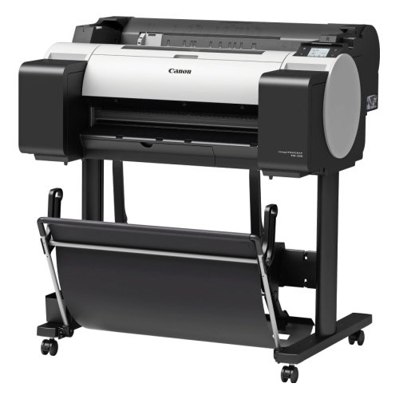Плоттер Canon imagePROGRAF TM-200 | Плоттер | Тип печати:цветная Технология печати:пузырьково-струйная Формат печати:A1 Количество цветов:5 шт. Разрешение печати:2400x1200 dpi Размер капли:5 пл Память:2000 Мб Интерфейс:USB, Ethernet, Wi-Fi Высота:1062 мм Ширина:982 мм Глубина:887 мм Вес:52 кг | ☆☆ | 1354,99 руб. |
| 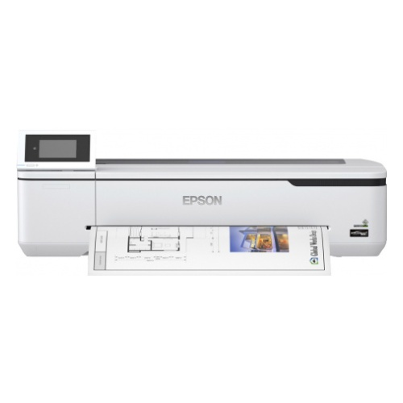Плоттер EPSON SureColor SC-T3100N | Плоттер | Тип печати:цветная Технология печати:струйная Формат печати:A1+ Количество цветов:4 шт. Разрешение печати:2400x1200 dpi Тип чернил:пигментные Печать на рулоне:есть Уровень шума:49 дБ Память:1024 Мб Интерфейс:USB, Ethernet, Wi-Fi Высота:230 мм Ширина:970 мм Глубина:505 мм Вес:38 кг | ☆☆ | 2934,99 руб. |
| 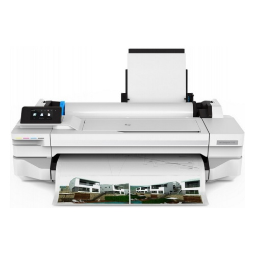Плоттер HP DesignJet T125 24" A1 (без стенда) | Плоттер | Тип печати:цветная Технология печати:термоструйная Формат печати:A1 Количество цветов:4 шт. Разрешение печати:1200x1200 dpi Печать без полей:нет Печать на листовых носителях:есть Печать на рулоне:есть Интерфейс:Ethernet (RJ-45), Wi-Fi, USB 2.0 Высота:530 мм Ширина:987 мм Глубина:285 мм Вес:25,5 кг | ☆☆☆ | 1189,99 руб. |
Green komp
Интернет-магазин Green komp. У нас вы можете приобрести различную оргтехнику, периферию. Мы работаем с 2009 года, активно развиваясь и расширяясь. Мы не забываем о том, что высочайший уровень обслуживания – показатель того, что мы работаем действительно качественно. Поэтому на нас можно положиться. Мы знаем, как важна простая система регистрации и оформления заказа, поэтому делаем все для того, чтобы оформить заказ было удобно (и быстро!). Для тех, кто всегда хочет быть в курсе: вы сами можете контролировать свой заказ, получая статус о его формировании посредством sms-сообщений. Мы продаем только «белый» товар, так как имеем только прямые контакты с ведущими поставщиками.